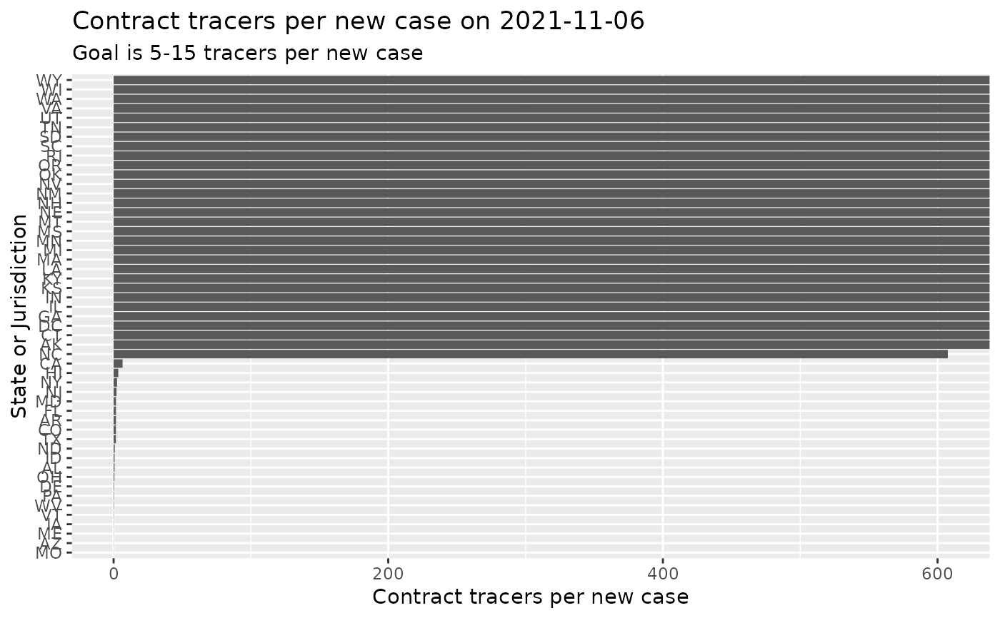

R/test_and_trace.R
test_and_trace_data.RdTesting and tracing statistics for United States from testandtrace.com
test_and_trace_data()
From the testandtrace website:
Countries with successful test and trace programs have less than 3% positive tests (meaning that they have enough testing capabilities to test aggressively). Source
A state needs ~5-15 contact tracers per daily positive test (contact tracers interview infected patients about who they’ve had close contact with, and then call those people to help them get tested and quarantined). Source
Suggested Grading Scale: Conducted on a 6 point scale with a 6/6 meaning that a state meets the necessary testing availability and tracing team size benchmarks to successfully test and trace.
Testing Grades:
3 points for under 3% positive tests
2 point for 3-5.5% positive tests
1 point for 5.5-8% positive tests
0 points if over 8% positive tests
Tracing Grades:
3 points for 5-15+ tracers per daily positive case
2 points for 2.5-5 tracers per daily positive case
1 point for 1-2.5 tracers per daily positive case
0 points for under 1 tracer per daily positive case
https://medium.com/@tomaspueyo/coronavirus-how-to-do-testing-and-contact-tracing-bde85b64072e
https://medium.com/@tomaspueyo/coronavirus-how-to-do-testing-and-contact-tracing-bde85b64072e
Other data-import:
acaps_government_measures_data(),
apple_mobility_data(),
beoutbreakprepared_data(),
cdc_aggregated_projections(),
cdc_excess_deaths(),
cdc_social_vulnerability_index(),
coronadatascraper_data(),
coronanet_government_response_data(),
cov_glue_lineage_data(),
cov_glue_newick_data(),
cov_glue_snp_lineage(),
covidtracker_data(),
descartes_mobility_data(),
ecdc_data(),
economist_excess_deaths(),
eu_data_cache_data(),
financial_times_excess_deaths(),
google_mobility_data(),
government_policy_timeline(),
healthdata_mobility_data(),
healthdata_projections_data(),
healthdata_testing_data(),
jhu_data(),
jhu_us_data(),
kff_icu_beds(),
nytimes_county_data(),
oecd_unemployment_data(),
owid_data(),
param_estimates_published(),
us_county_geo_details(),
us_county_health_rankings(),
us_healthcare_capacity(),
us_hospital_details(),
us_state_distancing_policy(),
usa_facts_data(),
who_cases()
Other case-tracking:
align_to_baseline(),
beoutbreakprepared_data(),
bulk_estimate_Rt(),
combined_us_cases_data(),
coronadatascraper_data(),
covidtracker_data(),
ecdc_data(),
estimate_Rt(),
eu_data_cache_data(),
jhu_data(),
nytimes_county_data(),
owid_data(),
plot_epicurve(),
usa_facts_data(),
who_cases()
#> # A tibble: 6 x 6 #> fips iso2c date contact_tracers_count state region #> <chr> <chr> <date> <dbl> <chr> <fct> #> 1 01 AL 2020-05-11 120 Alabama South #> 2 01 AL 2020-05-12 120 Alabama South #> 3 01 AL 2020-05-13 120 Alabama South #> 4 01 AL 2020-05-14 120 Alabama South #> 5 01 AL 2020-05-15 120 Alabama South #> 6 01 AL 2020-05-16 120 Alabama Southcolnames(TAndT)#> [1] "fips" "iso2c" "date" #> [4] "contact_tracers_count" "state" "region"#> Rows: 5,298 #> Columns: 6 #> $ fips <chr> "01", "01", "01", "01", "01", "01", "01", "01",… #> $ iso2c <chr> "AL", "AL", "AL", "AL", "AL", "AL", "AL", "AL",… #> $ date <date> 2020-05-11, 2020-05-12, 2020-05-13, 2020-05-14… #> $ contact_tracers_count <dbl> 120, 120, 120, 120, 120, 120, 120, 120, 120, 12… #> $ state <chr> "Alabama", "Alabama", "Alabama", "Alabama", "Al… #> $ region <fct> South, South, South, South, South, South, South…nyt = nytimes_state_data() %>% dplyr::select(-state) %>% dplyr::mutate(fips = substr(fips,4,5)) %>% dplyr::filter(subset=='confirmed') %>% add_incidence_column(grouping_columns = 'fips') testers = TAndT %>% dplyr::left_join(nyt, c('fips'='fips','date'='date')) %>% dplyr::mutate(tracers_per_new_case = contact_tracers_count/inc) testers %>% dplyr::filter(date==Sys.Date()-4) %>% ggplot(aes(x=reorder(iso2c,tracers_per_new_case),y=tracers_per_new_case)) + geom_bar(stat='identity') + coord_flip() + xlab('State or Jurisdiction') + ylab('Contract tracers per new case') + ggtitle(sprintf('Contract tracers per new case on %s', Sys.Date() - 4), subtitle='Goal is 5-15 tracers per new case')